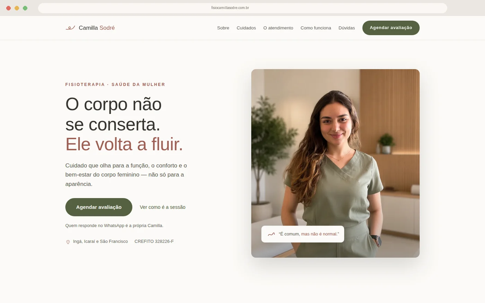
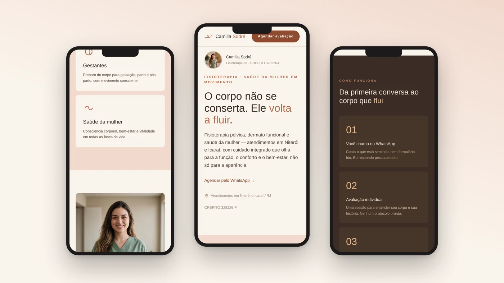

Camilla Sodré uma marca do zero ao ar.
✓ CASE REAL · CLIENTE

O DESAFIO
Conteúdo bom, embalagem inconsistente. A Camilla tinha presença e conhecimento, mas a marca não traduzia a sofisticação do trabalho — e o público certo não parava pra olhar.
A SOLUÇÃO
Diagnóstico de posicionamento, identidade com paleta rosé/sage, landing page de conversão, sistema de carrosséis e diretrizes de vídeo — tudo falando a mesma língua.
A ENTREGA
Uma marca coerente e pronta pra escalar: reconhecível sem o logo, com templates que aceleram a produção e uma landing page publicada e no ar — você pode conferir agora ↗
O QUE FOI ENTREGUE
Estratégia & posicionamento
Identidade visual completa
Landing page
Carrosséis de Instagram
Diretrizes + edição de vídeo
A MARCA EM DETALHE

